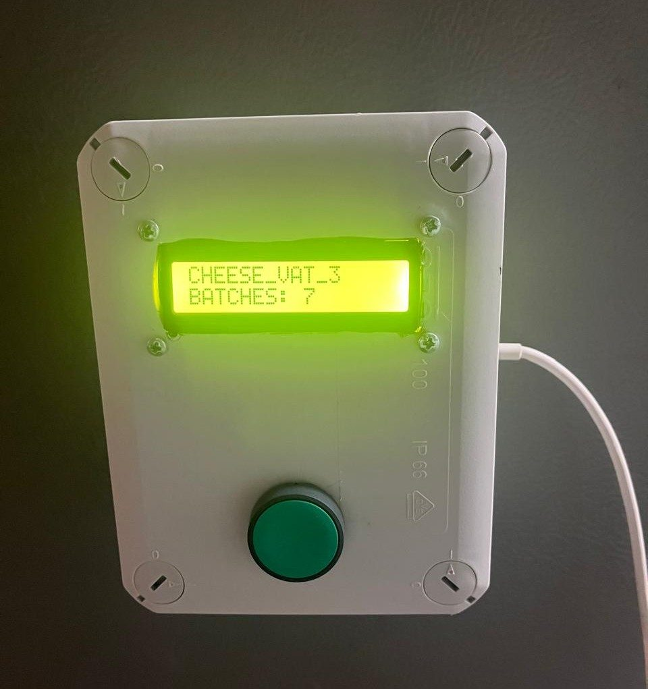
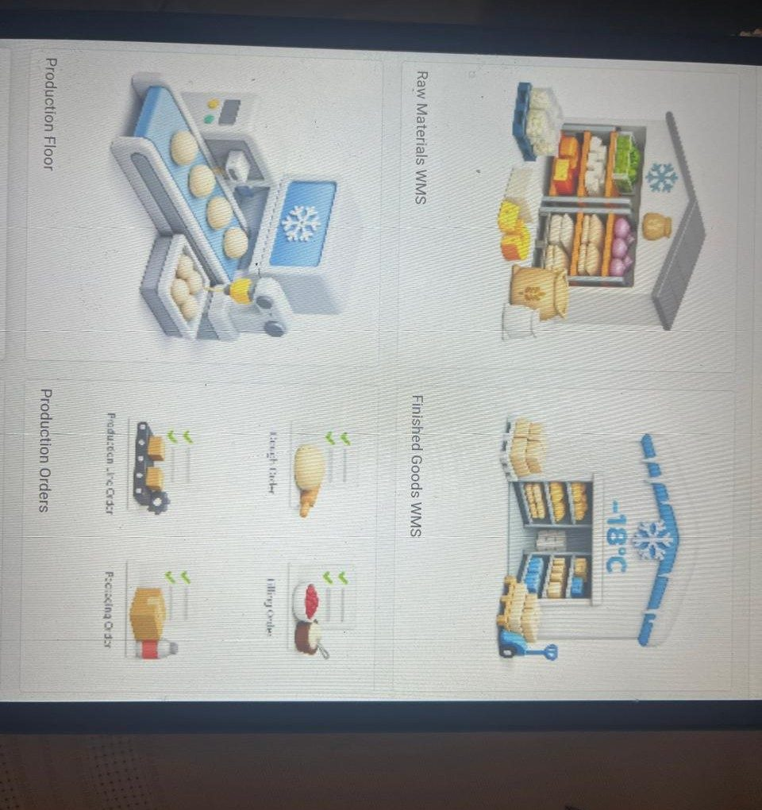
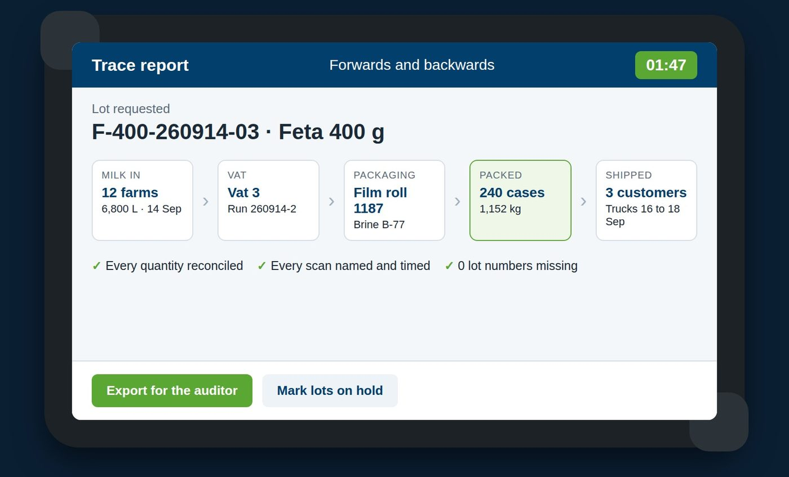

Trace any batch in one tap.
Back to the milk, forward to the customer. Panthoron records every batch on your production floor as it is made, so you are ready for every audit and every recall.

What happens on your floor
Your operators keep working the way they do now. The record is made at the line, as each batch is made.

Scan every raw material
The operator scans each ingredient and packaging roll on a tablet at the line. The batch cannot start until every material is scanned. Nothing depends on memory.
Scanned · OKLog the batch and its temperature
A sealed sensor station sits by the tank. It logs each batch and its temperature automatically, in wet rooms too.
Vat 3 · 7 batches todayRaise an alarm on the spot
You set the temperature limit. If it is crossed, the station flashes and sounds an alarm on the floor until someone presses its button.
Limit crossed · AlarmAudits and recalls in minutes
Pick up any box. One tap shows its full history, backwards to the farms and forwards to the customers who received it.

- For the auditorExport the full trace report for IFS, BRC or HACCP checks.
- For a recallFind only the batches at risk, and keep the safe food on sale.
- For dairiesThe ARTEMIS milk report is built in.
What it costs
- Sensor stations and tablets
- Installation in your plant
- Training for your team
- The Panthoron app and trace reports
- Cloud storage and updates
- Support, and replacement of faulty stations
Greek and EU grants for going digital can help pay for the setup. We can put you in touch with consultants who help plants apply.
How setup works
Site visit
We walk your production line and map where each batch starts and ends.
Installation
Stations and tablets go in, about two weeks after your order.
Training
Your team learns on its own line, during a normal shift.
Live
Every batch is recorded from the first day.
Questions owners ask
Will my staff really scan?
They have to. The batch cannot start until every material is scanned, so the record exists before production begins. Scanning takes seconds at the line.
Does it work with our ERP?
Yes. Panthoron works with or without an ERP, and exports the batch data to it.
What if the Wi-Fi drops?
Scans are stored on the device and sync when the connection is back. Production does not stop.
Can the stations go in wet rooms?
Yes. The stations are sealed for wet rooms and cleaning.
What if a station breaks?
We replace a faulty station at no extra cost while you subscribe.
Who owns our data?
You do. Your data sits in an encrypted European cloud, and you can export all of it at any time.
What kind of plants is it for?
Small and medium food plants. We start with dairies in Greece, and also work with other plants such as bakeries.
Who we are